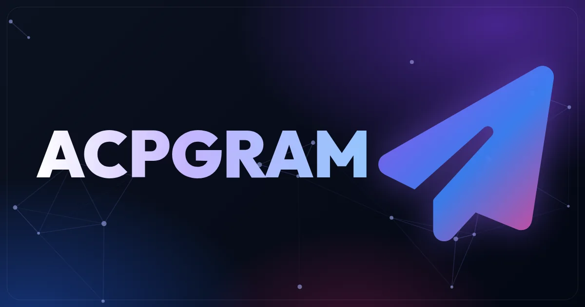
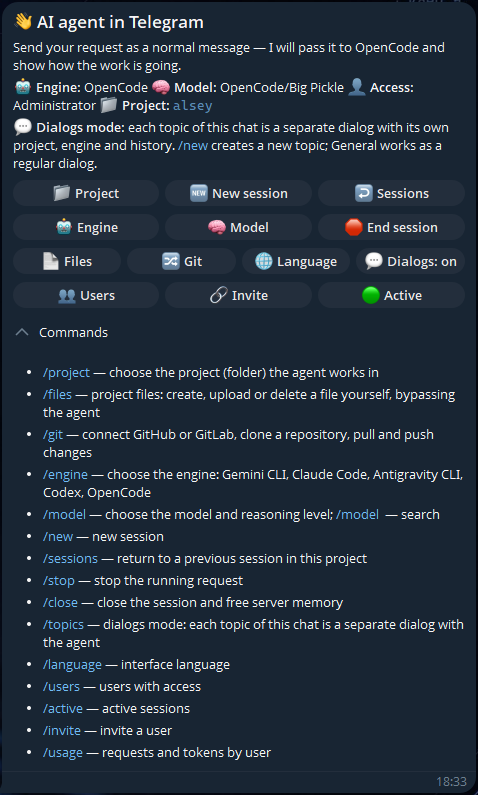
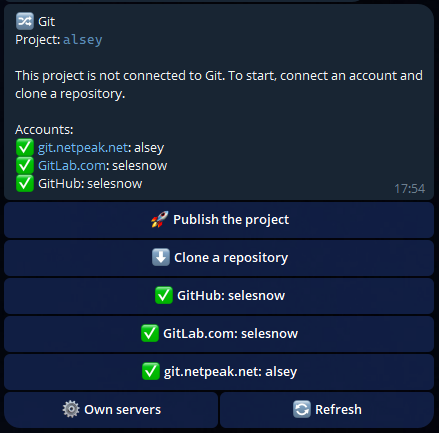
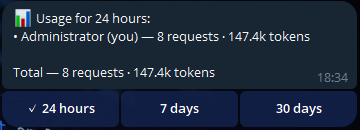

AcpGram 1.30: проекты, файлы и Git прямо из Telegram

Вышел AcpGram 1.30.0. Для тех, кто ещё не в курсе: AcpGram это мост между Telegram и кодинг-агентами. Вы пишете задачу в чат, а Claude Code, Codex, Gemini CLI, Antigravity CLI или OpenCode выполняет её на вашем компьютере или сервере и спрашивает разрешения кнопками.
Прошлая статья была про версию 1.20.0 и поддержку OpenCode. С тех пор вышли версии с 1.20.1 по 1.30.0, и вместе они решают одну большую задачу: проект теперь можно вести из Telegram целиком. Создать папку, положить в неё ключи, написать код с агентом, посмотреть изменения, отправить их на GitHub или GitLab и открыть запрос на слияние. Терминал на машине, где работает агент, для этого больше не нужен.
Так теперь выглядит экран /start: на нём появились кнопки «Files» и «Git». Скриншоты в статье сняты с английским интерфейсом, но бот говорит и на русском, и на украинском.

Обновиться можно одной командой. Если ставили установщиком:
acpgram update
acpgram service restart
Если через npm:
npm install -g acpgram@latest
acpgram service restart
Настройки и история сессий сохраняются. Если AcpGram у вас ещё не установлен, начните с пяти шагов на странице проекта.
В статье я иду от самого заметного к менее заметному:
- Git в Telegram: подключение GitHub и GitLab без токена, клонирование, изменения, ветки, публикация проекта и запрос на слияние.
- Файлы проекта и секреты: как положить в проект
.env, не показав его модели. - Новый проект кнопкой.
- Удобнее общаться с агентом: кнопки быстрого ответа, дифф в запросе разрешения, очередь сообщений.
- Для команды: личные пространства, песочница агента на Linux, расход по сотрудникам.
- Безопасность: что исправлено по итогам аудита.
- Мелкие улучшения.
Полный список изменений по версиям есть на странице релизов.
Git в Telegram
Агент и раньше умел работать с репозиторием локально: смотреть состояние, коммитить, сливать ветки. Но клонировать проект, получить свежие изменения или отправить свои можно было только там, где уже настроен вход на сервер. То есть в терминале. Команда /git (и кнопка «🔀 Git» на экране /start) закрывает этот пробел. На машине с ботом нужен только установленный git.
Вот экран /git, когда аккаунты уже подключены, а проект ещё не связан с репозиторием: его можно опубликовать или клонировать на его место другой.

Подключение аккаунта без токена
GitHub и GitLab.com подключаются по ссылке и короткому коду:
/git→ «➕ Подключить GitHub» или «➕ Подключить GitLab.com».- Нажимаете «🔗 Войти без токена». Бот показывает ссылку и код.
- Открываете ссылку, вводите код и подтверждаете доступ на сайте сервиса.
- Через несколько секунд бот сам пишет, что аккаунт подключён.
Создавать токен, выбирать права и присылать что-то секретное в чат не нужно. Это работает в любой установке AcpGram без настройки. У GitLab такой вход действует два часа, и бот сам продлевает его перед каждой операцией, вам об этом думать не надо.
Вход по токену доступа остался рядом. Он же нужен для своих серверов: GitLab и GitHub Enterprise. Свой сервер добавляет администратор прямо в боте: /git → «⚙️ Свои серверы» → вид сервера → адрес. После этого каждый пользователь может подключить на нём свой аккаунт. Сообщение с токеном бот сразу удаляет из чата и агенту не передаёт, а о сроке действия токена напомнит: за неделю, за день и когда срок истечёт.
Клонирование
«⬇️ Клонировать репозиторий» показывает ваши репозитории списком: недавно менявшиеся первыми, с поиском по названию. Выбранный репозиторий клонируется и сразу становится текущим проектом. Та же кнопка «⬇️ Из Git» есть в /project.
Изменения и дифф до отправки
Экран репозитория показывает ветку, число изменённых файлов, неотправленных коммитов и новых коммитов на сервере. Кнопка «📋 Изменения» открывает список файлов с пометками (новый, изменён, удалён, переименован) и числом добавленных и убранных строк. Нажатие на файл показывает сам дифф: короткий прямо в сообщении с подсветкой, длинный файлом .diff.
Всё это бот делает сам, без агента и без запросов к модели. Можно спокойно посмотреть, что агент наменял, и только потом решать, отправлять это или нет.
Сохранить, отправить, получить
- «💾 Сохранить и отправить» спрашивает описание, коммитит все изменения и отправляет их на сервер.
- «⬆️ Отправить» отправляет уже готовые коммиты.
- «⬇️ Получить» забирает изменения с сервера, если это возможно без слияния. Если истории разошлись, бот предложит попросить агента объединить изменения.
Автор коммитов — владелец подключённого аккаунта: его имя и почта передаются и боту, и агенту.
Ветки
«🌿 Ветки» показывает локальные ветки и ветки сервера одним списком. Нажатие переключает на ветку, «➕ Новая ветка» создаёт её от текущей. Переключение сделано бережно: при несохранённых изменениях бот не переключает, а предлагает сначала сохранить их, а пока агент выполняет запрос, отказывает. После переключения следующий запрос начинает новую сессию агента, потому что файлы проекта сменились целиком.
Отмена изменений
Агент сделал не то? В карточке файла есть «↩️ Вернуть как было», на экране изменений — «↩️ Отменить все изменения». Изменённые и удалённые файлы возвращаются к последнему коммиту, новые удаляются. Действие необратимо, поэтому бот всегда просит подтверждение, а файлы с секретами не трогает.
Публикация проекта и запрос на слияние
Для папки, которая ещё не связана с сервером, есть «🚀 Опубликовать проект». Вы выбираете сервис, место (личное пространство, группа GitLab с подгруппами или организация GitHub), видимость и название. Бот создаёт репозиторий, делает первый коммит и отправляет его.
«🔀 Запрос на слияние» открывает запрос из текущей ветки в основную ветку репозитория и присылает ссылку. Если открытый запрос из этой ветки уже есть, бот покажет его, а не создаст второй.
Агент предлагает, вы нажимаете
По умолчанию у агента нет входа на сервер. Поэтому просьбу «закоммить и отправь» он выполняет так: делает коммит, а под его ответом появляется кнопка отправки. Без вашего нажатия на сервер ничего не уходит.
Где хранится вход
Вход на сервер лежит только в базе бота. Процессу git он передаётся через окружение на время операции и только для адресов своего сервиса, в настройки репозитория и в адрес не пишется. Сам git бот запускает с отключёнными хуками и помощниками входа.
Файлы с секретами (.env, ключи, учётные данные) «Сохранить и отправить» в коммит не включает и дописывает в .gitignore. Если такой файл закоммитил агент, перед отправкой бот предупредит и будет ждать «Отправить всё равно».
Администратор может выбрать другой режим: GIT_AGENT_AUTH=1 передаёт вход и процессу агента, и он получает и отправляет изменения сам. Это удобнее, но токен становится виден агенту и может попасть в запрос к модели.
Подробности: раздел «Git: GitHub и GitLab» в README.
Файлы проекта и секреты
Всё, что вы пишете боту или отправляете ему файлом, уходит агенту, а значит, в запрос к модели. Для паролей, токенов и ключей это не подходит, особенно на бесплатных моделях: они могут использовать запросы для обучения. При этом приложению, которое пишет агент, эти ключи нужны.
Команда /files (и кнопка «📄 Файлы» на экране /start) кладёт файл прямо в папку проекта, минуя агента:
- «📝 Создать файл». Бот спрашивает имя, можно с подпапкой:
config/.env. Затем вы присылаете содержимое одним сообщением. Бот сохраняет файл и сразу удаляет ваше сообщение из чата. - «⬆️ Загрузить файл». Следующий присланный файл или альбом сохраняется в открытую папку проекта под своим именем.
- Список и удаление. По папкам проекта можно ходить кнопками, файл удаляется из его карточки с подтверждением.
Без нажатия кнопки всё работает как раньше: файлы и изображения, отправленные в чат, уходят агенту.
Заодно агент получил постоянную подсказку: файлы с секретами не открывать и не выводить, на настройки ссылаться по именам, а за недостающим значением отправлять вас в /files, а не просить прислать его в чат.
Подробности: раздел «Файлы проекта и секреты» в README.
Новый проект кнопкой
Раньше проект можно было только выбрать из папок, которые уже есть на машине. Теперь в /project есть кнопка «➕ Новый проект»: бот спрашивает название, создаёт папку и сразу делает её рабочей. Рядом кнопка «⬇️ Из Git», которая клонирует репозиторий.
Вместе с /files и /git получается полный путь: идея пришла в дороге, вы создали проект, положили в него ключи, поставили агенту задачу, посмотрели дифф и отправили код в репозиторий. Всё с телефона.
Удобнее общаться с агентом
Набирать текст с телефона неудобно, поэтому в интерфейсе стало больше кнопок и больше сведений о том, что агент собирается сделать.
- Кнопки быстрого ответа. Когда агент задаёт вопрос с вариантами («Да», «Нет», «Показать план»), варианты приходят кнопками прямо в его ответе. Нажатие отправляет агенту текст варианта.
- Дифф в запросе разрешения. В запросе на правку файла теперь виден построчный дифф. Раньше бот показывал только путь, и разрешение давалось вслепую.
- План агента. Если агент присылает боту свой план, в черновике виден блок с пунктами и отметками: что сделано, что выполняется, что впереди. Так делают не все агенты и не в каждой задаче: OpenCode план не присылает, Claude Code и Codex присылают его не всегда.
- Очередь. Сообщение, отправленное во время работы агента, больше не теряется. Бот отправит его следующим и предложит две кнопки: «Остановить и отправить это» и «Не отправлять».
- Цитаты. Ответ на сообщение с выделенным фрагментом передаёт агенту и ваш текст, и сам фрагмент.
- Опечатки в командах.
/modleбольше не уходит агенту как запрос: бот спросит, не имели ли вы в виду/model. - Понятный отказ. На голосовое, видео или стикер бот отвечает подсказкой, а не молчит.
Для команды
AcpGram начинался как личный инструмент, но его можно поставить и на общий сервер для команды, в том числе для людей, далёких от терминала: им Telegram нужен как единственный интерфейс. Для такого сценария появились три вещи.
Личные пространства
По умолчанию все пользователи ходят по одному корню проектов. Две строки в .env дают каждому свою папку:
PROJECTS_ROOT=/srv/projects
USER_WORKSPACES=1
Папка <корень>/<Telegram ID> создаётся сама при первом обращении к боту. Сотрудник выбирает и создаёт проекты только в ней: чужие папки не показываются, не находятся поиском и не выбираются путём. Пути он видит от своей папки («Моё пространство», site, site/landing), расположение папок на сервере ему не показывается. Администратор по-прежнему видит весь корень.
Песочница агента на Linux
Личные пространства ограничивают выбор папки в боте, но сам агент по-прежнему работает с правами учётной записи бота. Попросите его прочитать файл соседа, и он прочитает. Песочница закрывает этот вопрос:
sudo apt install bubblewrap
AGENT_SANDBOX=bwrap
Агент каждого сотрудника запускается через bubblewrap, системную утилиту Linux. Внутри есть папка проектов сотрудника, его отдельная домашняя папка, его загруженные файлы и системные программы. Настроек и базы бота, чужих папок и чужих процессов там просто нет. При запуске бот сам проверяет, что песочница работает и секреты изнутри не видны. Если нет, он не запустится и объяснит причину.
Приятное следствие: уровень доступа «Полный», при котором агент не спрашивает разрешений, становится заметно безопаснее. Изменить агент может только пространство своего сотрудника.
Подробности: разделы «Личные пространства» и «Песочница агента (Linux)» в README.
Расход по сотрудникам
Команда /usage показывает администратору запросы, токены и стоимость по каждому сотруднику за 24 часа, 7 и 30 дней.

Безопасность
В версии 1.20.2 исправлено всё, что нашёл аудит безопасности. Это главная причина обновиться, даже если новые возможности вам не нужны.
- Кнопки в тексте агента. Разметка Telegram позволяла превратить текст в настоящую кнопку. Инструкция, спрятанная в файле или на веб-странице, могла заставить агента вывести администратору кнопку, которая подтверждает запрос разрешения или выдаёт сотруднику полный доступ. Теперь такие теги в тексте агента обезвреживаются.
- Окружение агента. Агент наследовал окружение бота целиком, вместе с токеном самого бота и ключами API всех провайдеров. Теперь он получает только ключи своего движка, а токен бота не получает совсем.
- «Разрешить на эту сессию» стало уже. Раньше разрешение на
python script.pyоткрывало иpython -c "что угодно", аgit statusразрешал все командыgit, включаяgit push. Теперь правило привязано к конкретной команде или подкоманде, и на кнопке написано, что именно вы разрешаете. - Секреты не отправляются в чат. Файлы с секретами бот не отправит, даже если агент скопирует их в каталог исходящих.
Мелкие улучшения
- Экраны
/projectи/engineстало проще читать: пути набраны моноширинным шрифтом и копируются нажатием, короткие имена папок стоят по две кнопки в ряд, текущий выбор выделен. - В
/sessionsподробности каждой сессии (дата, движок, число запросов, начало первого запроса) перенесены из подписи кнопки в текст сообщения. - Сообщения об ошибках агента показываются на языке интерфейса: русском, украинском или английском.
- Новый ключ провайдера в
.envсразу добавляет его модели в/model. Раньше приходилось ждать сутки, пока обновится список. - Под служебными сообщениями появились кнопки вместо команд: «⏹ Остановить», «🗂 Сессии».
- Готовы виджеты Telegram для
/modelи/sessions, в которых список листается прямо на устройстве. Они выключены по умолчанию (WIDGETS=1): на момент выхода Telegram не принимает виджеты от обычных ботов, поэтому вживую они не проверены.
Что дальше
В ближайших планах вход по ссылке и коду для своих серверов GitLab и GitHub Enterprise, удаление веток и список запросов на слияние в /git, а для команд — лимиты на место и ресурсы.
Если нашли ошибку или не хватает какой-то возможности, напишите в GitHub Issues. А если AcpGram вам пригодился, поставьте звезду на GitHub: это помогает проекту.